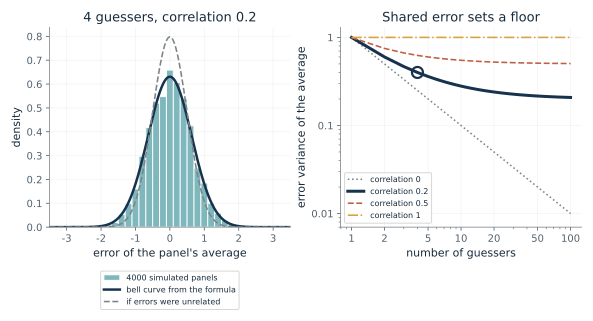
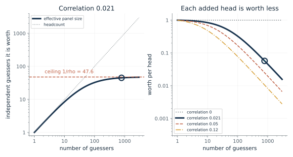
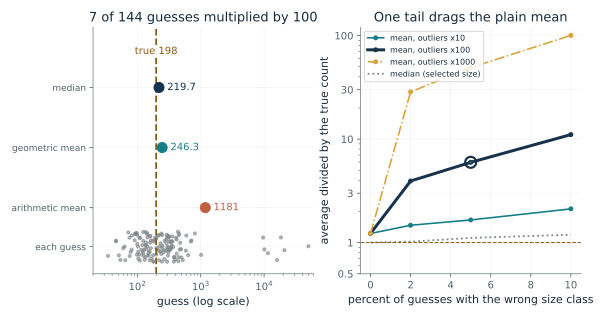
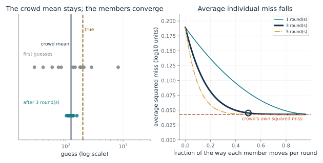
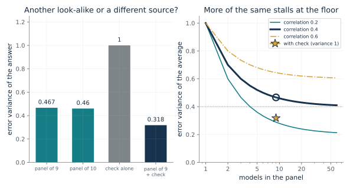
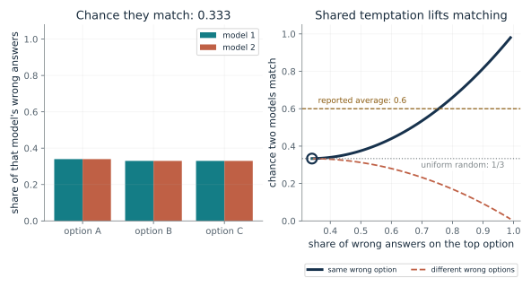
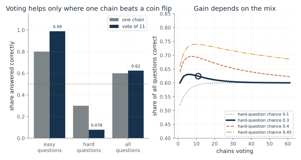

Ask for the guesses or scores, how each was produced, whether the members learned from the same sources, and how lopsided the errors look. Then pick the card: the variance formula and effective size for how much an average will vary, a median or geometric mean when a few guesses are wildly off, inverse-variance weighting when one source is independent of the rest, and a check on whether the vote's members share the same wrong answer. Report the pooled answer, the effective size under a stated correlation, and the assumption that would break it.
“I have 20 model answers to one question and plan to average them. How do I tell whether 20 answers are worth 20 independent opinions?”
Use mmi-ch23-several-minds-help with the companion's AI skill package. The illustrations below also work on their own.
How steady is an average when the guessers share a lean?
From Chapter 23, In an invented ledger, a small shared lean makes 787 guesses worth only 45
If each guesser's error has variance 1 and any two errors correlate, how much does the panel's average still vary, and what do extra guessers stop being able to fix?
Split each guesser's error into a part shared by everyone and a private part. Averaging cancels the private parts as the panel grows, so their contribution shrinks as one over n. The shared part is the same in every guess, so averaging leaves it untouched. The variance of the average is the sum of the two surviving pieces.
Predict first: With 4 guessers whose errors correlate at 0.2, predict whether the average's error variance is nearer 0.25 (unrelated errors) or 0.2 (the floor) before moving the sliders.

Number of guessers: 4 · Error correlation (rho): 0.2
What happens: The average's error variance is 0.4: the unshared part, 0.8 divided by 4, is 0.2, and the shared part adds 0.2 more. With unrelated errors it would be 0.25. Slide n up: the curve flattens at 0.2, the floor.
With 4 guessers, each with error variance 1 and pairwise error correlation 0.2, the average has error variance 0.4, against 0.25 if the errors were unrelated. Adding guessers can never take it below 0.2.
- Variance of the average
- 0.4
- Variance if errors were unrelated
- 0.25
- Floor, however many are added
- 0.2
- Simulated variance (4000 panels)
- 0.39
A panel that looks large can behave like a small one. Knowing the floor tells you when to stop adding look-alike members and look for a different source.
Nerve cells that respond to the same thing share some of their random noise, and a 1994 study reported a weak average correlation of 0.12 between pairs. The formula is a way to think about what that does to a pool; it is a model, and the study was not about judgment.
An ensemble average can be computed exactly given error variances and a correlation. The correlation of real models' errors still has to be measured, and the chapter says none of the studies did that.
Show the calculation
Var = sigma^2 x ((1 - rho)/n + rho) = ((1 - 0.2)/4 + 0.2) = 0.4. Unrelated errors: 1/4 = 0.25. Floor = rho = 0.2. The simulation (seed 2342) built each error from a shared part and a private part and gave 0.39.
The equations and symbols
- n
- the number of estimates, at least one
- sigma^2
- the common error variance of one member (set to 1 here)
- rho
- the error correlation between any two members, taken as the same for every pair
- Var(X-bar)
- how much the average varies across repeated panels
Equal weights, equal error variance, one pairwise correlation for all pairs, and no shared bias. The formula is about variance only: a lean that every member shares in the same direction is an extra problem it does not count.
Check your understanding: With 4 guessers and correlation 0.5, what is the error variance of the average, and what is the floor?
Book source: Chapter 23, In an invented ledger, a small shared lean makes 787 guesses worth only 45. Illustration C23-D01. Formula. Book formula. The panel of four with correlation 0.2 giving 0.4 against 0.25 is the chapter's constructed example. The histogram is a seeded simulation (4000 panels) built to have exactly the stated correlation; it checks the formula and is not a measurement of any crowd.
How many independent guessers is a crowd worth?
From Chapter 23, In an invented ledger, a small shared lean makes 787 guesses worth only 45
If 787 guessers share a small error correlation of 0.021, how many independent guessers do they equal, and what happens when a thousand more join?
The variance of an average is sigma squared times (1 - rho)/n plus rho. An average of n independent guessers has variance sigma squared over n, so setting the two equal gives n_eff. As n grows, the first piece vanishes and only the floor rho remains, so the worth cannot exceed 1 over rho.
Predict first: With correlation 0.021, predict the effective size of 787 guessers, and whether adding a thousand more would roughly double it.

Number of guessers: 787 · Error correlation (rho): 0.021
What happens: 787 guessers are worth 45.0, about 45. Switch n to 1787 and the worth only rises to 46.4, because the ceiling is 1/0.021, about 48.
787 guessers whose errors correlate at 0.021 are worth 45 independent ones, or 0.0571 of a head each. No panel of this kind can be worth more than 47.6.
- Effective panel size
- 45
- Ceiling as the panel grows
- 47.6
- Worth per head
- 0.0571
- Variance of the average (sigma^2 = 1)
- 0.0222
Headcounts and ensemble sizes overstate what a pool knows when members share influences. Estimating how much their mistakes overlap is the number that matters.
A 1994 study reported weak correlated noise between pairs of cells, averaging 0.12, and argued it can limit what a pool can signal; a 2020 study reported correlated noise limiting signalling in groups of 800 to 1,300 mouse visual cells. Applying one equal correlation to every pair is an idealization, not what those studies fitted.
For an ensemble, the formula turns a stated error correlation into a worth. The correlation of real models' errors is not supplied by any study in the chapter.
Show the calculation
n_eff = n/(1 + (n - 1) rho) = 787/(1 + 786 x 0.021) = 787/17.5 = 45. Ceiling = 1/rho = 47.6.
The equations and symbols
- n
- the number of guessers
- rho
- the error correlation between any two guessers; here a chosen value
- n_eff
- effective panel size: how many independent guessers give an average as steady as the panel's
- 1/rho
- the ceiling the effective size approaches as the panel grows; undefined when rho is 0
Equal error variance, one correlation for every pair, equal weights. The effective size counts steadiness only. It is not a measure of shared bias or of how many distinct opinions there are.
Check your understanding: Using n = 100 and correlation 0.05, what is the effective size, and what is the ceiling?
Book source: Chapter 23, In an invented ledger, a small shared lean makes 787 guesses worth only 45. Illustration C23-D02. Formula. Book formula. The 787 guessers are Galton's count, but the correlation 0.021 is chosen by the chapter and nothing about Galton's guessers supports it. The values 0.05 and 0.12 are added here for contrast; 0.12 is the weak average correlation between pairs of nerve cells that a 1994 study reported, used as an idealization with every pair equal.
Which average survives a few wildly wrong guesses?
From Chapter 23, Guessing Swiss murders, alone and in sight of others
When a few guesses are off by a whole size class, how far does the plain average move compared with the median and the geometric mean?
A plain average adds the guesses, so a single guess a thousand times too big contributes a thousand times too much. The median looks only at the middle guess, so it changes only if the outliers cross the middle. The geometric mean averages the logs, so a factor of 100 adds only the log of 100 to one term.
Predict first: If 5 percent of 144 guesses are 100 times too large, predict whether the arithmetic mean ends up within 20 percent of the true count or several times above it.

Share of guesses in the wrong size class: 0.05 · How far off those guesses are (times): 100
What happens: Seven guesses 100 times too large lift the arithmetic mean from 242 to 1181, about 6.0 times the true 198, while the geometric mean moves only from 197 to 246 and the median from 198 to 220.
With 7 of 144 constructed guesses multiplied by 100, the arithmetic mean is 1181, 5.96 times the true 198. The geometric mean, 246.3, and the median, 219.7, move much less.
- Arithmetic mean
- 1181
- Geometric mean
- 246.3
- Median
- 219.7
- True count
- 198
Pooling rules are decisions about the shape of the errors. A machine applies any rule exactly the same way each time, so choosing the rule is the part a person still owns.
Show the calculation
Bulk: 144 guesses with log10 normal, center log10(190), sd 0.3 (seed 2011). The first 7 are multiplied by 100. Geometric mean = exp(mean of ln guesses) = 246.3. Mean 1181, median 219.7.
The equations and symbols
- x_i
- guess number i, positive
- n
- the number of guesses (144 here)
- g-bar
- the geometric mean: the plain average of the logs, turned back into a count
The bulk of guesses is unbiased in logs and the outliers are a pure multiple of the bulk. Real guesses will not split so cleanly. Which average is best depends on the shape of the errors, and no rule is best for all shapes.
Check your understanding: In a group of 4 guesses 100, 100, 100 and 10,000, what are the arithmetic mean and the geometric mean?
Book source: Chapter 23, Guessing Swiss murders, alone and in sight of others. Illustration C23-D03. Simulation. Constructed sample, not the students' data. The question (198 murders registered in Switzerland in 2006) and the group of 144 follow the chapter's account of Lorenz and colleagues, who reported a mean of 838, a median of 170 and a geometric mean of about 174 on first guesses. Here 144 guesses are drawn with seed 2011 around 190, and some are multiplied by 10, 100 or 1000 to imitate a wrong size class.
Why can social influence narrow a crowd without making it more right?
From Chapter 23, Guessing Swiss murders, alone and in sight of others
If every member moves part of the way to the crowd's average, what happens to the crowd's own error and to the members' average error?
Average squared miss equals the squared miss of the crowd average plus the average squared distance of members from that average. Moving each member a fixed fraction toward the average leaves the average where it was and scales every distance from it by one minus the fraction. So the second piece shrinks while the first stays.
Predict first: If every member moves half the way to the crowd average three times, predict whether the crowd's own squared miss changes and by what factor the disagreement shrinks.

Fraction moved toward the crowd each round: 0.5 · Rounds of influence: 3
What happens: The crowd's squared miss stays put while the average individual squared miss falls from 0.189 to 0.045, because disagreement shrinks by a factor of (0.5)^6, about 0.0156.
Each of 12 constructed guessers moves 0.5 of the way to the group's log average, 3 time(s). The average squared miss falls from 0.189 to 0.0452, while the crowd's own squared miss stays 0.0429.
- Average individual squared miss, before
- 0.189
- Average individual squared miss, after
- 0.0452
- Crowd's squared miss (unchanged)
- 0.0429
- Disagreement among members, after
- 0.00228
A group that becomes more alike can look more accurate member by member while knowing exactly as much as before. Diversity is what pooling uses, and influence uses it up.
Show the calculation
Average squared miss = crowd's squared miss + disagreement. Before: 0.189 = 0.0429 + 0.146. After: 0.0452 = 0.0429 + 0.00228. Disagreement shrinks by (1 - 0.5)^6 = 0.0156. Logs are base 10; seed 2012.
The equations and symbols
- y_i
- member i's guess on the log scale
- y-bar
- the crowd average of the logs, which is the geometric mean on the original scale
- t
- the true value on the log scale
- n
- the number of members (12 here)
Every member moves the same fraction toward the current crowd average each round. The study found that guesses grew more alike and the crowd's error did not fall significantly in its main test. This computation shows why those can go together; it does not fit the students' revisions.
Check your understanding: Two guesses on the log scale are 1 and 3, and the truth is 3. They each move halfway to their average once. What are the average squared miss before and after?
Book source: Chapter 23, Guessing Swiss murders, alone and in sight of others. Illustration C23-D04. Formula. Book identity (stated on logs). The 12 guesses are constructed with seed 2012 (a low lean of 0.25 in log10 units and spread 0.4), and the pull rule is the chapter's simple model of moving the same part of the way to the crowd average. The chapter says the study did not fit this rule to the students.
What does an independent check add that a tenth look-alike cannot?
From Chapter 23, Two heads in a contrast test: similar partners gained, very unequal pairs could lose
For nine models with error variance 1 and error correlation 0.4, what does a tenth similar model buy, and what does an independent check buy?
The panel average cannot fall below the shared error rho, so adding a similar member moves it only a little. An independent source has no part in that shared error, so combining by precision (one over variance) pulls the answer below the floor of the panel alone. The combined precision is the sum of the two precisions.
Predict first: Before moving the sliders, predict whether a tenth model like the other nine lowers the panel's variance by more or less than one percent of a unit.

Models in the panel: 9 · Error correlation among them: 0.4 · Error variance of the independent check: 1.0
What happens: The panel of nine has variance 0.467 and a tenth member only 0.46, a gain of 0.007. An independent check of variance 1, weighted by precision, takes it to 0.318.
A panel of 9 with error variance 1 and correlation 0.4 averages to variance 0.467, and a panel of 10 only to 0.46. An independent check of variance 1, weighted by precision, takes it to 0.318.
- Panel of 9
- 0.467
- Panel of 10
- 0.46
- Panel plus independent check
- 0.318
- Weight on the check
- 0.318
The useful question for a partnership is where each answer came from, not only how reliable it seems. A source that fails for different reasons is worth more than another copy of the same reason.
In Bahrami and colleagues' 2010 contrast-test pairs, partners with similar sensitivity beat their better member, and very unequal pairs could lose. The model that fit was weighted confidence sharing, and the pairs pooled less well than an ideal inverse-variance rule would. Those are behavioral results from 15 pairs in the first experiment.
An ensemble plus a verifier can be combined by inverse-variance weighting if the verifier's errors are independent of the ensemble's. The chapter's nine models and their variances are invented.
Show the calculation
Panel: (1 - 0.4)/9 + 0.4 = 0.467. One more member: (1 - 0.4)/10 + 0.4 = 0.46. With the check: 1/(1/0.467 + 1/1) = 0.318. The check's errors must be unbiased and unrelated to the panel's.
The equations and symbols
- n
- the number of models in the panel
- rho
- the error correlation between any two panel members, chosen here
- V_panel
- error variance of the panel's average, each member having variance 1
- V_check
- error variance of an unbiased check whose errors are unrelated to the panel's
All estimates are unbiased for the same quantity, the check's errors are independent of the panel's, and the weights use the true variances. If the check shares the panel's sources or any source is biased, the combined variance is not what the formula gives.
Check your understanding: A panel has variance 0.5 and an independent check has variance 0.5. What is the combined variance?
Book source: Chapter 23, Two heads in a contrast test: similar partners gained, very unequal pairs could lose. Illustration C23-D05. Formula. Chapter's constructed example (nine models, variance 1, correlation 0.4, giving about 0.47, then about 0.32 with a check), computed here with extra panel sizes and correlations. The numbers are invented, as the chapter says.
Can independent models agree on a wrong answer by temptation alone?
From Chapter 23, Models that pick the same wrong option
If two models never see each other's answers but one wrong option tempts both, how often do they pick the same wrong option?
Two independent choosers match when both land on the same option. Their match chance is the sum, over options, of the product of the two shares. With uniform shares over three options this is 3 times (1/3)^2 = 1/3. Concentrating the shares on one option raises the sum. If the two models are tempted by different options, the sum is smaller.
Predict first: If the single most tempting wrong option draws 60 percent of each model's wrong answers, predict whether independent models would match about 0.4, 0.5 or 0.6 of the time.

Share of wrong answers on the most tempting option: 0.34 · Which option tempts the second model: same wrong option
What happens: With 0.6 of wrong answers on one shared option, independent models match 0.6 x 0.6 + 2 x 0.2 x 0.2 = 0.44 of the time, well above 1/3 and still below the reported 0.6. It takes a share of about 0.755 to reach 0.6.
If independent models send 0.34 of their wrong answers to their most tempting option, and the same option tempts both models, they match 0.333 of the time. Reaching the reported 0.6 this way takes a share of 0.755 on one shared option, an extreme concentration the chapter does not claim.
- Chance two independent models match
- 0.333
- Uniform random baseline
- 0.333
- Average the study reported over model pairs
- 0.6
- Most tempting share needed to reach 0.6 (same option)
- 0.755
Voting and averaging assume independence. Matching on wrong answers is a warning for that assumption, but this figure cannot be dropped into the error-correlation formula, and why it arises is not established.
The study compared 71 models on a public leaderboard and found higher matching for models from the same developer and for larger, more accurate ones. The chapter says why this happens is not established.
Show the calculation
Match chance = sum over options of (model 1's share) x (model 2's share) = 0.34 x 0.34 + 2 x 0.33^2 = 0.333. For the same option, L^2 + (1 - L)^2/2 = 0.6 gives L = (1 + sqrt(1.6))/3 = 0.755.
The equations and symbols
- p_j
- model 1's chance of choosing wrong option j, given it is wrong
- q_j
- model 2's chance of choosing wrong option j, given it is wrong
- L
- the share of wrong answers going to the most tempting option; the other two options share the rest equally
Both models choose independently and each has the same fixed shares over three wrong options. The chapter notes that some wrong options look closer to right and would draw independent models too, so the gap above 1/3 does not by itself measure excess agreement. The 0.6 is an average over pairs, not an error correlation.
Check your understanding: If 0.5 of each model's wrong answers go to the same option and the other two share the rest, what is the match chance?
Book source: Chapter 23, Models that pick the same wrong option. Illustration C23-D06. Model. Constructed illustration. The reported figures are from Kim and colleagues as the chapter gives them: an average match of 0.6 over pairs among 71 models on questions both got wrong, against 1/3 for uniform random choice among three wrong options. The shape of the wrong-option shares here is invented to show a mechanism, not fitted to their data.
When does a majority vote over sampled answers help? (worst case)
From Chapter 23, Models that pick the same wrong option
If a model samples many chains of reasoning and the most common answer wins, when does the vote beat one chain, and when does it make things worse if all wrong chains agree?
For one question with chain chance p, the vote is right when more than half of the chains are. For p above one half the chance climbs toward 1 as chains are added, and, if every wrong chain gives the same wrong answer, for p below one half it falls toward 0. Real self-consistency takes the most common answer, so scattered wrong answers can lose to a right answer with fewer than half the votes (in a simulation with 41 chains and a right chance of 0.3, wrong answers spread over three other options gave about 0.5 right, over six about 0.9; this is the companion's own check, not the book's number). The overall effect is the average across questions, so it depends on how many questions lean each way.
Predict first: Suppose every wrong chain gives the same wrong answer and a hard question has a chain chance of 0.3. Predict whether a vote of 41 chains on it is right more often or less often than one chain.

Chains voting: 11 · Chance one chain is right on a hard question: 0.3
What happens: If every wrong chain gives the same wrong answer, a vote of 41 on hard questions is right only 0.004 of the time, against 0.3 for one chain, while easy questions rise to 1.000. Overall the vote scores 0.601 against 0.60 for one chain. With hard-question chance 0.45 the vote scores 0.704 against 0.660.
In a constructed mix with 60 percent easy questions (each chain right with chance 0.8) and hard ones (chance 0.3), one chain scores 0.6 and a vote of 11 scores 0.624. In this worst-case model (every wrong chain gives the same wrong answer) voting lifts easy questions toward certainty and sinks hard ones.
- One chain, all questions
- 0.6
- Vote of 11, all questions
- 0.624
- Vote on hard questions
- 0.0782
- Change from voting
- 0.0243
Adding votes does not repair a model that gives the same wrong answer most of the time (the case this demonstration models). The chapter's cross-model vote did worse than the best single model because lower-capacity models dragged it down.
Self-consistency samples several chains from one model and takes the most common final answer. The chains are independent draws for a given question yet still share that model's strengths and biases.
Show the calculation
Vote correct = sum over k above 11/2 of C(11, k) p^k (1 - p)^(11 - k). Easy: 0.988. Hard (p = 0.3): 0.0782. Overall = 0.6 x 0.988 + 0.4 x 0.0782 = 0.624; one chain: 0.6 x 0.8 + 0.4 x 0.3 = 0.6.
The equations and symbols
- m
- the number of sampled chains, odd so there are no ties
- p
- the chance one chain is right on this question
- k
- how many of the m chains are right
Chains are drawn independently given the question, each right with a fixed chance for that question, The vote counts as right only if more than half of the chains are right. That is the worst case in which every wrong chain gives the same wrong answer; real self-consistency takes the most common answer, so when wrong chains scatter over different answers a right answer with fewer than half the votes can still win. In real use all chains also share one model's strengths and biases.
Check your understanding: With p = 0.6 on a question, what is the chance that a vote of 3 chains is right?
Book source: Chapter 23, Models that pick the same wrong option. Illustration C23-D07. Constructed example. Constructed population, not a result. Easy questions (60 percent of them) have chain accuracy 0.8 and hard ones a chosen lower value. The chapter reports, for PaLM-540B on grade-school math, 56.5 percent with one chain and 74.4 percent with a vote over 40 chains (mean of 10 runs), and 36.9 percent when PaLM-540B and a smaller model voted together; this demonstration does not reproduce those figures. The rise from 56.5 to 74.4 percent in the cited paper is not reproduced, and the decline with many chains in the right panel is a result of the worst-case assumption.
Mathematical illustrations use the book's formulas with disclosed small examples. Each interactive choice shows a result computed from the same calculations as the chapter notebook. A simulation is not a measurement, and for a brain the mathematics is a model: a picture illustrates a result, and the assumptions determine its scope. Review copy, brain-computer partnership revision of 1 november 2026.